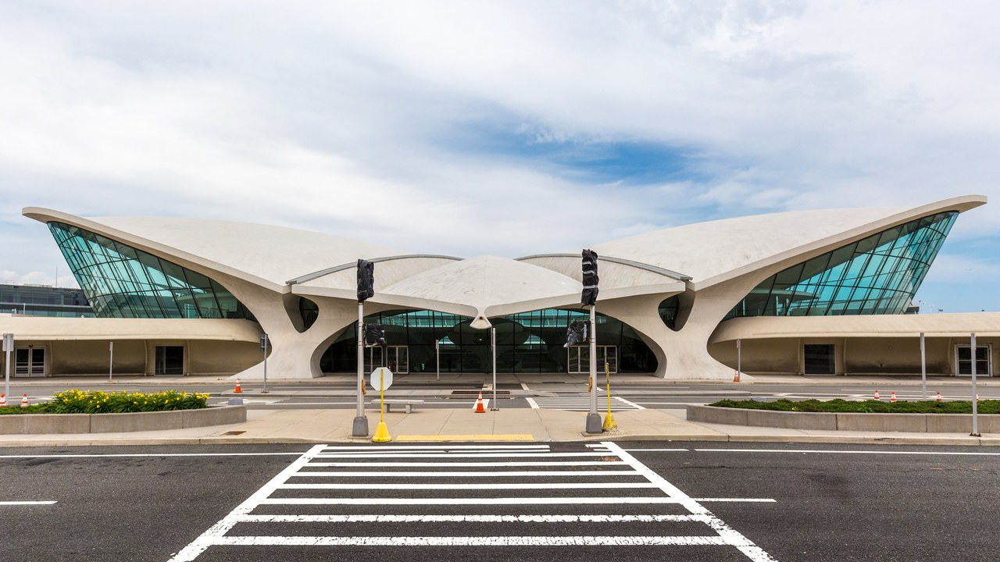

John F Keneddy Airport
JFK is located in the Jamaica neighborhood of Queens in New York City, 16 miles (26 km) southeast of Midtown Manhattan. The airport features six passenger terminals and four runways. It serves as a hub for both American Airlines and Delta Air Lines, and it is the primary operating base for JetBlue. JFK was also formerly a hub for Pan Am, TWA, Eastern, National, and Tower Air. The facility opened in 1948 as New York International Airport and was commonly known as Idlewild Airport. Following John F. Kennedy's assassination in 1963, the airport was renamed John F. Kennedy International Airport as a tribute to the 35th President.